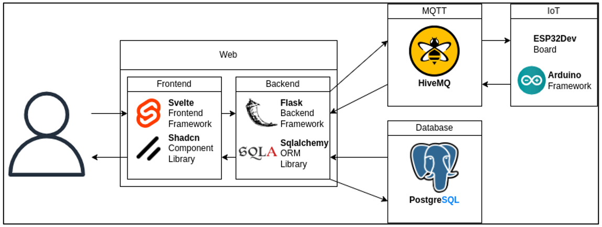
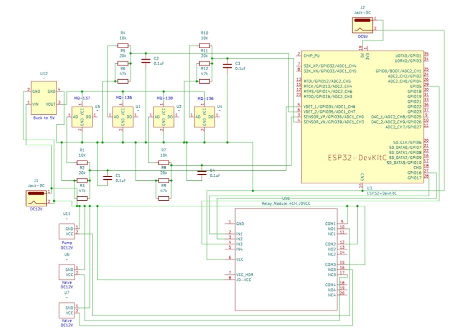
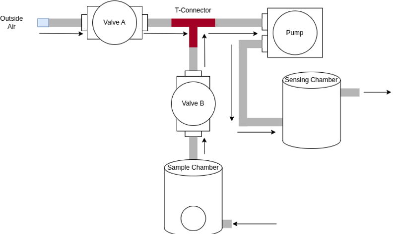

Capstone
Web Platform for an IoT-Based Onion Grading Module
Web Application GitHub RepoIoT Software GitHub Repo
Tech Stack

Electronic Schematic

This is my first time dealing with IoT. It took a lot of rushed hours and sleepless nights.
Mechanical Design
